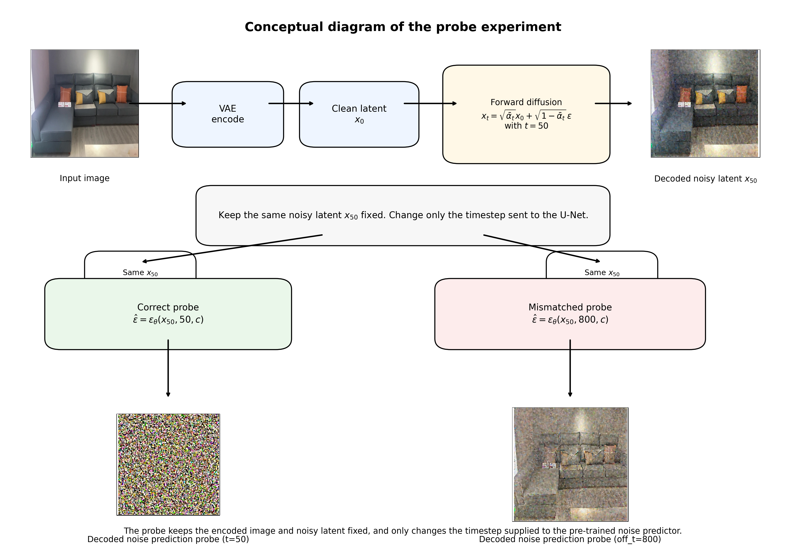
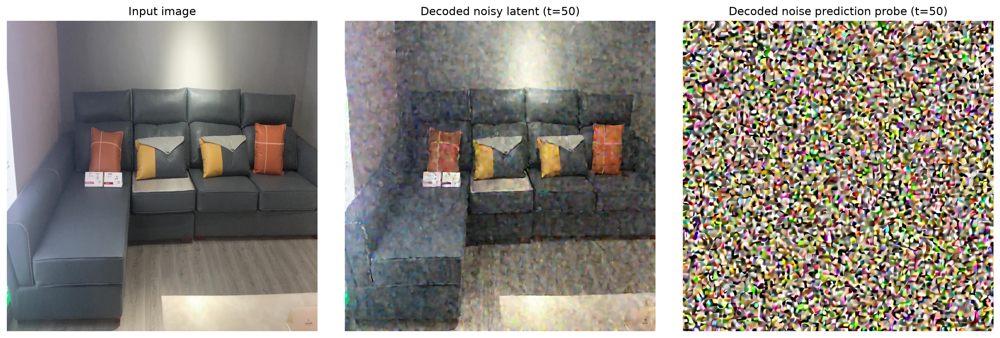
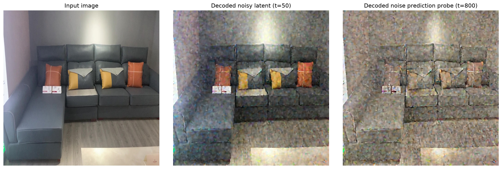
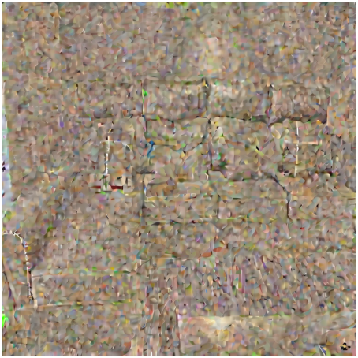

The Noising of Diffusion Noise: A Timestep Mismatch Probe.
For a noise predicting diffusion model, at each timestep, the model says: “Given this noisy latent and this noise level, here is my best guess of the clean image, and here is the noise/direction needed to move one step down the schedule.” And then the sampler says: “I will not fully trust this as the final image yet. I will use it to move to the next lower-noise state and ask again.”
This is my intuition of what is being done at each of the noise prediction and sampling timesteps in a diffusion trajectory.
In this generative flow, the conditioned force driving us from a gaussian noise space to the clean data space is the inherent noise or the direction at each step towards a clean data point. The clean data point is guided by a conditioning signal - the common case being a textual prompt.
In this blog, we probe a mismatch case: we purposefully mismatch the expected timestep for this pre-trained noise predicting diffusion model and observe the noise predictions.
To make the setup concrete, we first corrupt a clean latent with the standard forward diffusion equation:
\[ x_t = \sqrt{\bar{\alpha}_t}\,x_0 + \sqrt{1-\bar{\alpha}_t}\,\epsilon, \qquad \epsilon \sim \mathcal{N}(0,I) \]
and then ask the pre-trained noise predictor to predict the corresponding noise:
\[ \hat{\epsilon} = \epsilon_\theta(x_t, t, c) \]
where \(x_t\) is the noisy latent, \(t\) is the timestep, and \(c\) is the conditioning signal.
The key point of the probe below is that we keep the encoded image and the noisy latent fixed, and then change only the timestep supplied to the noise predictor.
Probe setup at a glance

Correct noise prediction
Now, lets see how a correct noise prediction looks like. We use timestep \(t=50\) to both corrupt an image as in forward diffusion and use the same \(t=50\) as the input to the diffusion model noise predictor. The empirical variance of the correct noise prediction is \(0.70\) at this timestep.
In this correct case, the probe is simply:
\[ x_{50} \longrightarrow \epsilon_\theta(x_{50}, 50, c) \]

A direct mismatch: noisy latent at \(t=50\), noise predictor probed at \(t=800\)
Let’s see what happens if we pass the timestep \(t=800\) to an image which has been corrupted with \(t=50\) in the forward diffusion process.
This mismatch is:
\[ x_{50} \longrightarrow \epsilon_\theta(x_{50}, 800, c) \]

The input is noised with \(t=50\) and while predicting the noise using the diffusion model, we purposefully mismatch the expected timestep on the other end of the noise spectrum by setting the value of \(t=800\). We see that this mismatch generates a noise prediction which retains most of the structure of the input image.
Sequential mismatch probe
Now, let’s probe the sequential mismatch where we see if any pattern emerges as we go from the far end of the introduced mismatch \(t=1000\) to the actual correct timestep value of \(50\).
The sequential probe can be written as:
\[ x_{50} \longrightarrow \epsilon_\theta(x_{50}, \mathrm{off\_t}, c), \qquad \mathrm{off\_t} \in \{1000, 950, 900, \ldots, 50\} \]

The Noising of Noise Pattern
Starting from \(\mathrm{off\_t}=1000\), we see that the noise predictions follow a reverse variance schedule pattern where at the most mismatched probe timestep \(1000\), we see most of the image content in the noise prediction and as we move towards the correct timestep \(50\), it seems like the noising of the mismatched noise prediction at timestep \(1000\) is happening as progressively the image features are being corrupted as we are going from timestep \(1000\) to \(50\).
A representative mismatched probe from that sequence is the case \(\mathrm{off\_t}=500\):
\[ x_{50} \longrightarrow \epsilon_\theta(x_{50}, 500, c) \]
This is the same noisy latent as before, but now the timestep sent to the pre-trained noise predictor is \(500\). This is the middle of our mismatch probe where the far end of the mismatch spectrum is timestep \(1000\) and the correct timestep is \(50\). In this middle point of the spectrum we can see how the image features visible in the mismatched noise prediction at timestep \(1000\) seem to be corruped similar to how in the forward diffusion corruption trend, we move from image features to gaussian noise dominated latents.

Two more fixed-noisy-latent probes
Now we probe two more cases:
- Fixing the noisy latent to \(t=800\) and probing the diffusion noise predictor.

- Fixing the noisy latent to \(t=400\) and probing the diffusion noise predictor.

My Subjective Interpretation and Conclusion
The mismatch probe suggests that the timestep embedding acts as an SNR-conditioned distributional lens: it decides whether the visible structure in the latent should be treated as data signal or as noise residual. When a low-noise latent x_t (at t=50) is viewed through a high-noise timestep such as t=800, the model appears to absorb residual image structure into the noise prediction itself. This does not contradict diffusion theory, but it exposes a useful practical failure mode: off-timestep score/noise queries can be wrong in a structured, image-aligned way rather than merely noisy or random.
The timestep does not only tell the model how much noise to remove; it tells the model what kind of input distribution it is allowed to believe it is seeing.
In other words:
Expected from theory:
mismatched timestep gives invalid noise prediction that might still look gaussian-like.
Revealed by probe:
the invalid prediction can systematically preserve image structure, and violate expected gaussian-like noise prediction at the off-timestep probesI beleive that this is worth mentioning because many discussions say “wrong timestep = wrong score,” but they do not show what kind of wrong score emerges.
Disclosure regarding the use of AI in producing this blog post
The first figure of the blog “Conceptual Diagram of the Probe Experiment” is AI-generated where the images inside the figure are provided by me and ChatGPT 5.5 created the experiment’s diagram. The appropriate references below were suggested by the same LLM, and I verified them. The language and thoughts are mine and AI was used to cross-refer interpretations with existing discussions across various sources.
How to cite this post
If you found this probe useful, you can cite it as:
@misc{singh2026diffusion_timestep_mismatch_probe,
author = {Singh, Sehajdeep},
title = {The Noising of Diffusion Noise: A Timestep Mismatch Probe},
year = {2026},
url = {https://sehajsasan.github.io/sehaj-notepad/posts/diffusion_timestep_mismatch_probe/}
}References and acknowledgements
This probe builds on the standard diffusion formulation introduced in DDPM, where a clean sample is progressively corrupted with Gaussian noise and a neural network is trained to predict the noise component. I also refer to the DDIM sampling interpretation when discussing timestep-wise denoising, and to the score-based view when using the language of score/noise directions.
The experiment is run in latent space using the SDXL base model through Hugging Face Diffusers. The decoded latent/noise visualizations should be read as qualitative probes, not as claims that a predicted noise tensor is itself a valid clean image latent.
The example input image is a randomly selected frame from the MVImgNet dataset and is used only as a probe image for inspecting timestep/noise-prediction behavior.
References
Ho, J., Jain, A., & Abbeel, P. Denoising Diffusion Probabilistic Models. arXiv:2006.11239, 2020.
Song, J., Meng, C., & Ermon, S. Denoising Diffusion Implicit Models. arXiv:2010.02502, 2020.
Song, Y., Sohl-Dickstein, J., Kingma, D. P., Kumar, A., Ermon, S., & Poole, B. Score-Based Generative Modeling through Stochastic Differential Equations. arXiv:2011.13456, 2020.
Rombach, R., Blattmann, A., Lorenz, D., Esser, P., & Ommer, B. High-Resolution Image Synthesis with Latent Diffusion Models. CVPR, 2022.
Podell, D., English, Z., Lacey, K., Blattmann, A., Dockhorn, T., Müller, J., Penna, J., & Rombach, R. SDXL: Improving Latent Diffusion Models for High-Resolution Image Synthesis. arXiv:2307.01952, 2023.
Yu, X., Xu, M., Zhang, Y., Liu, H., Ye, C., Wu, Y., Yan, Z., Zhu, C., Xiong, Z., Liang, T., Chen, G., Cui, S., & Han, X. MVImgNet: A Large-scale Dataset of Multi-view Images. arXiv:2303.06042, 2023.
Hugging Face. Diffusers: State-of-the-art diffusion models for image, video, and audio generation in PyTorch. GitHub repository.
Stability AI.
stabilityai/stable-diffusion-xl-base-1.0. Hugging Face model checkpoint.